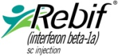

Historie firmy
Naši pracovníci mají přes 10 let zkušeností s vývojem softwaru, zejména s programováním webových aplikací pro sběr a analýzu dat v sociální péči a zdravotnictví. Níže uvádíme stručný přehled realizovaných projektů:
Ainso
Registr pro sběr dat v léčebných procesech neurologických onemocnění.
Hlavní vlastnosti
- Procesně řízený sběr dat – hlavním prvkem aplikace je proces a vizuálně zpracovaný aktuální stav ve vývojovém diagramu procesu.
- Chování aplikace je navázáno na odpovídající proces každé léčby, který je navržen dle doporučeného postupu.
Další části projektu
- Clearingové centrum výkazu očkovacích látek – zobrazení odevzdaných výkazů o použití očkovacích látek.
- Proces pravidelné synchronizace databáze Clearingového centra a webové aplikace.
Confidence
Registr pro sběr dat o léčebném přípravku z nemocnic 4 zemí Evropské unie
(Belgie, Holandsko, Rakousko, Slovensko).
- Multijazyčné řešení.
- Informační systém pro projekt sledování dekubitů jako indikátoru kvality ošetřovatelské péče na národní úrovni.
Funkce systému sledování dekubitů
- Sběr záznamů šetření dekubitů z nemocnic po celé ČR dle standardizované metodiky.
- Výpočet standardizovaných ukazatelů za celou ČR.
- Porovnání jednotlivých nemocnic s průměrem v ČR.
- Systematické sledování rizikových pacientů, které přispívá ke zvyšování kvality péče.
Více informací: dekubity.kancelarzp.cz
Informační systém pro správu procesu návrhů a vytváření standardů
Správa procesu vytváření zdravotnických standardů:
- Správa procesu vytváření zdravotnických standardů
- Registrace návrhů standardů
- Sdílení a revize vytvářených dokumentů v týmu
Informační web pro účastníky projektu Národní sady ukazatelů zdravotních služeb.
Informační systém pro správu procesu autorizace laboratoří
Systém pro podporu správy veřejných www stránek Státního zdravotního ústavu a
procesu autorizace laboratoří.
Odkaz na stránky: státní zdravotní ústav (odkaz)
Sledování kognice u Rebifu – studie SKORE
Sběrné formuláře pro studii SKORE. Systém umožňuje sběr dat o léčebném
přípravku z nemocnic po celé ČR.
